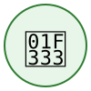

Veo only — park at city bike racks, nowhere else
Dublin has a formal operating agreement with Veo, and only Veo vehicles are permitted in and out of the area.
Parking standards are strict: every vehicle must be left at a city bike rack. Parking anywhere else in Dublin is not permitted.
Spin's active service area ends at the Dublin border.
 CBUS Ride Hubs
CBUS Ride HubsNote
311 data shown is from the Columbus system only. Dublin has its own municipal 311 system that is not yet integrated into this site. For Dublin-specific service requests, please contact the City of Dublin directly.
Neighborhood Boundary
Ride hub markers carry a badge counting the vehicles within 100 m of the hub, and fill in proportion to the hub's docks. A red outline means no vehicle is nearby; amber means more vehicles are nearby than the hub has docks. Red rings mark cross-vendor pile-ups — four or more vehicles from more than one operator within 20 m. Proximity is an estimate; it does not prove a vehicle is parked at a hub.
Data Sources
311 Data: Columbus 311 Service Request public map, counted over a rolling 30-day window (City of Columbus system only; Dublin and Grandview have separate 311 systems not yet integrated) (updated —)
Vehicle Data: GBFS feeds from Veo and Spin (updated —)
CBUS Ride Hubs: City of Columbus CBUS Ride bike-share locations
Geography: OpenStreetMap municipality and neighborhood boundaries